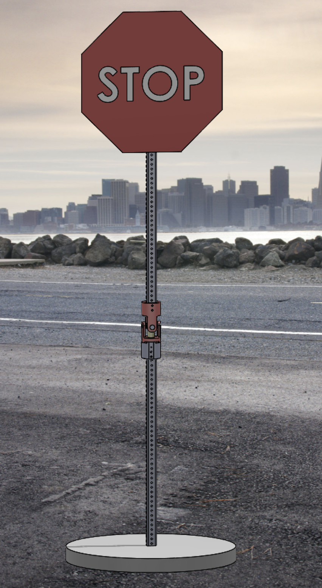
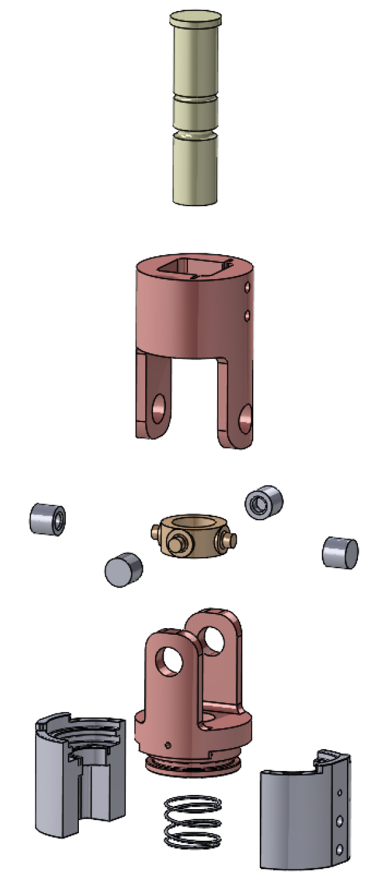

Reactive Road Sign System
A hurricane-resilient retrofit mechanism designed to protect roadside signposts by allowing controlled aerodynamic rotation and sacrificial breakaway under extreme wind loads.
Project Status
This project is currently in progress as part of Boston University's Mechanical Engineering Senior Design program. The system has completed the Critical Design Review stage, where analytical modeling, component selection, and simulation work were finalized.
Current Progress
- System geometry and architecture finalized
- Wind load calculations and structural modeling completed
- FEA validation of normal-load structural behavior
- Breakaway mechanism concept analytically derived
Next Steps
- Prototype fabrication and assembly
- Experimental breakaway testing
- Validation of predicted failure loads
- Refinement of manufacturability and durability
System Overview
Conventional roadside signs are rigidly mounted to steel posts, which means extreme wind loads during storms are transferred directly into the supporting structure and foundation. This often results in bent posts, damaged foundations, and costly infrastructure replacement after severe weather events.
The goal of this project is to develop a retrofit mechanical system that protects roadside infrastructure by redirecting extreme loads into replaceable mechanical components rather than the structural post itself.
The mechanism integrates two behaviors:
- Aerodynamic rotation: under moderate wind loads, the sign can rotate slightly into the wind to reduce drag.
- Sacrificial breakaway: under extreme loading, a designed breakaway pin fractures to allow the sign to fold down safely.

How the Mechanism Works
Torsional Spring Response
At moderate wind speeds, a torsional spring allows the sign to rotate approximately ±15° about the post axis. This reduces the projected aerodynamic area while maintaining visibility for drivers.
When wind speeds decrease, the spring returns the sign to its original front-facing orientation.
Controlled Breakaway
At extreme wind loads, a sacrificial breakaway pin fractures in a controlled manner. Once the pin fails, the sign folds downward instead of transferring the full load into the post or foundation.
This limits permanent infrastructure damage while allowing the system to be repaired by replacing a low-cost component.


My Role
This project is being completed as part of a two-person senior design team. My primary contributions focus on the analytical and engineering decision-making side of the project, including structural modeling, component sizing, and design documentation, while collaborating closely with my teammate on iterative design development.
- Developed analytical wind-load models used to size the torsional spring and breakaway mechanism.
- Derived the combined bending and shear stress framework used to estimate breakaway pin loading.
- Led materials selection and component sourcing for the prototype system.
- Prepared major portions of the written design reports and engineering documentation.
- Contributed to design iteration, manufacturability considerations, and prototype planning.
Engineering Analysis
Analytical modeling was used to determine the forces acting on the sign under hurricane-level wind conditions. These loads were then used to size both the torsional spring system and the sacrificial breakaway pin.

Simulation & Validation
Finite Element Analysis (FEA) was used to verify that the structure remains within allowable stress limits under normal operating loads. The analysis confirmed that the design would survive moderate winds while concentrating extreme loads in the breakaway pin.


Design Challenges
Balancing Rotation and Visibility
Allowing aerodynamic rotation reduces wind loading, but the rotation angle must remain small enough that the sign remains readable to drivers.
Controlled Structural Failure
The breakaway pin must fail predictably at a specific load range, while avoiding premature failure under normal conditions.
Expected Impact
If implemented at scale, this system could significantly reduce infrastructure damage during hurricanes and severe storms by preventing roadside signposts from bending or failing under extreme aerodynamic loading.
By redirecting extreme loads into replaceable mechanical components, the design could reduce repair costs and speed up post-storm recovery for transportation infrastructure.